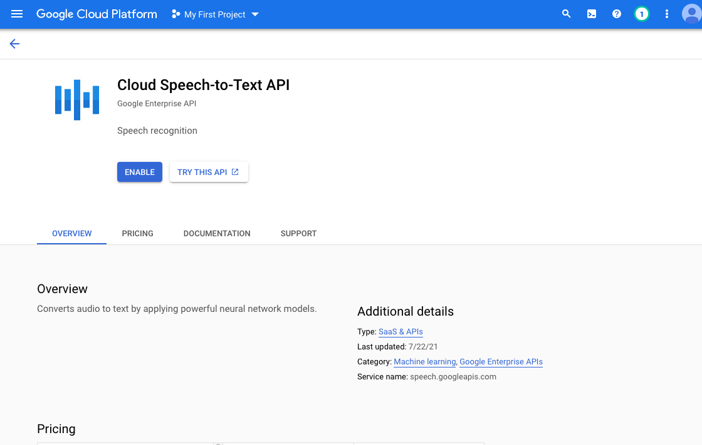
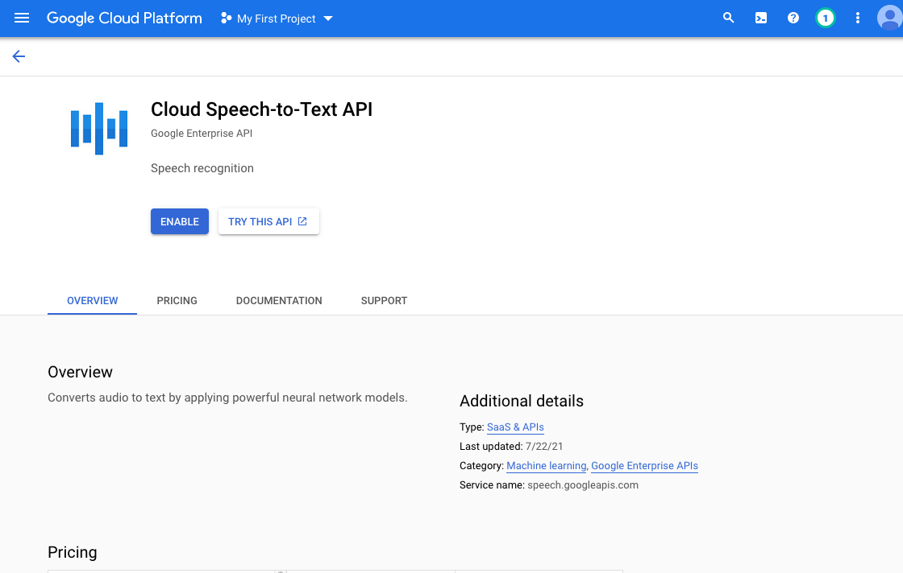
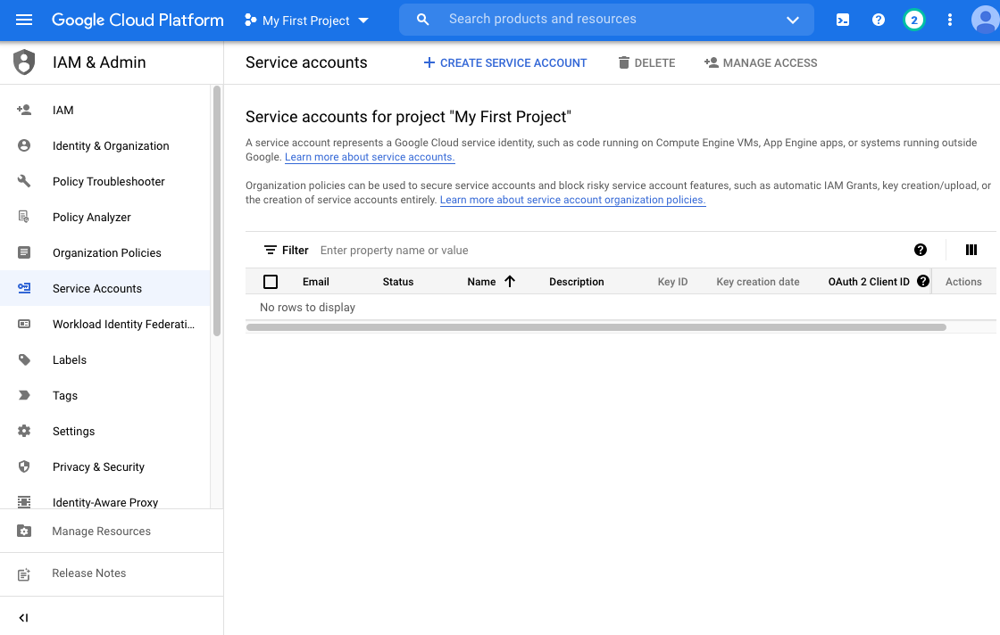
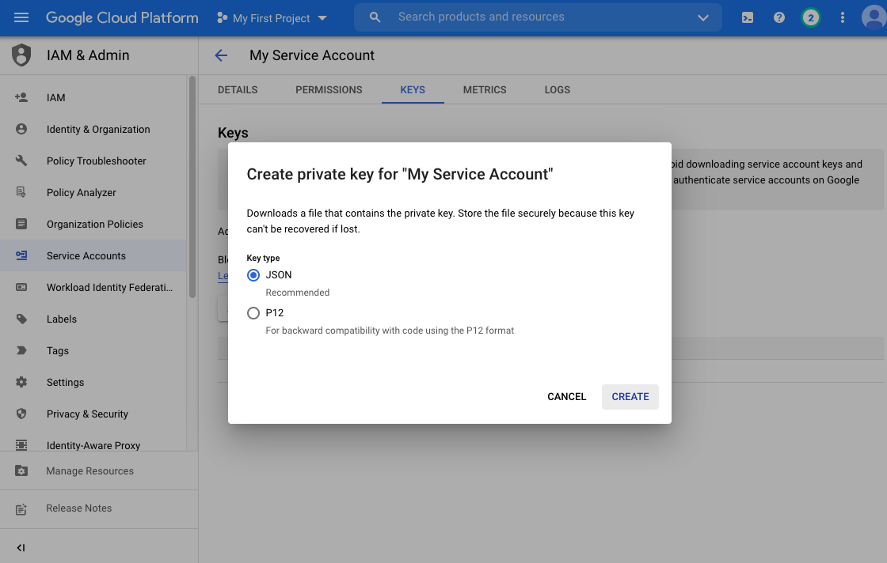
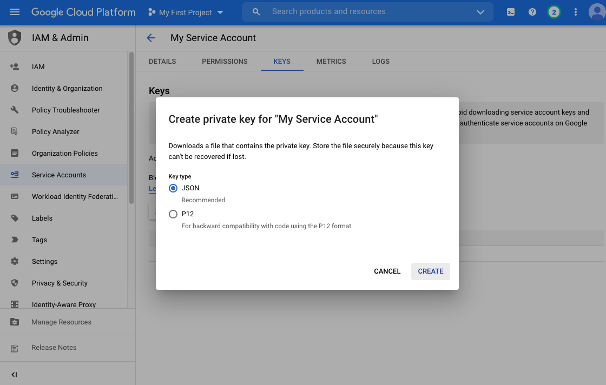

Setting Up Your Google Cloud Account
Use the following guide to setup your Google Cloud account for use with the diarization
tool in Phon. Main steps:
- Create Google Cloud Account
- Enable Speech-to-Text API
- Create service account with Storage Admin and Speech Client roles and download credentials file
- Take note of project id
Account Setup Steps
- Goto https://cloud.google.com. Sign in to the Google account which will be the owner of the cloud services project
- If you do not already have a Google Cloud account, click Get started for
free. Follow the three steps for setting up your account.

Enable Speech-to-Text API
- From the APIs and Services page, click the Enable
APIs and Services button. Search for 'Cloud Speech-to-Text API' and
click the first result. Enable the API by clicking the Enable
button on information page for the API.
 
 - Access the left-hand menu by clicking on the menu icon in the top-left corner of the webpage. Then click IAMs and Admin then Service accounts
Create Service Account
- Create a new service account for your project by clicking the Create
Service Account button. Choose a name for the account and
then add the Cloud Storage Admin and Cloud Speech Client roles
for the account. You may leave the last step blank and click done.


- From the Service Accounts page click on the triple-dot icon
under Actions in the row of the service account created in
the previous step. Click Manage Keys and then . Select JSON for the format and then save the
resulting download. You will need this file when using the diarization tool.

 

Find Project Id
- Finally, take note of your project id. This can be found under in the Google Cloud platform menu and is different then your
project name (alert-snowfall-332412 in the example below.) If you
forget, note this is also the same as the first portion of the downloaded
.json filename - without the final -XXXXXXX.json.